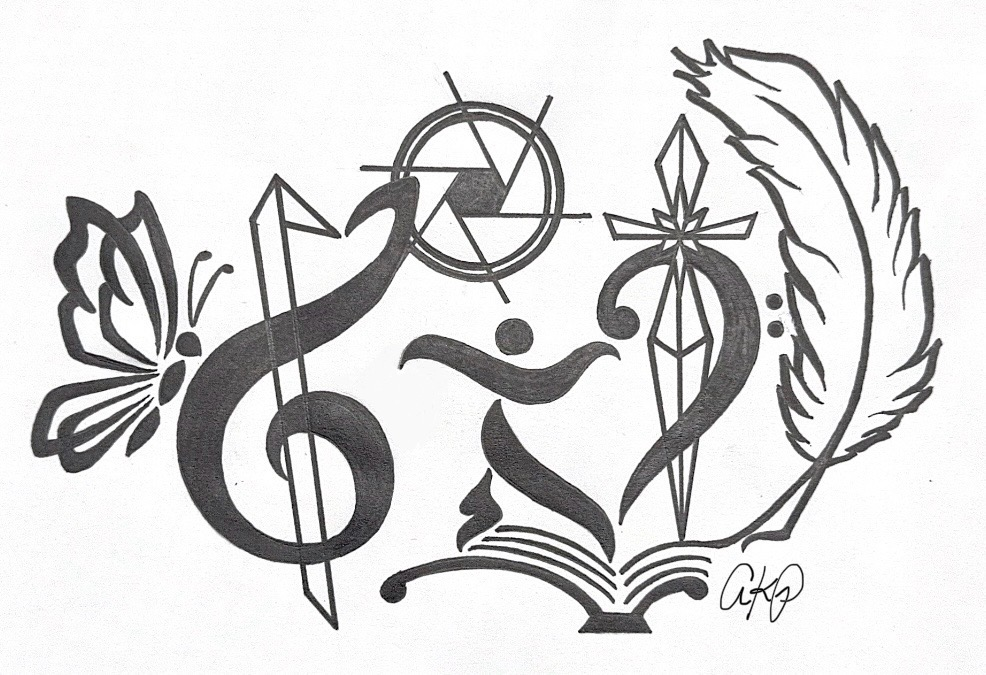
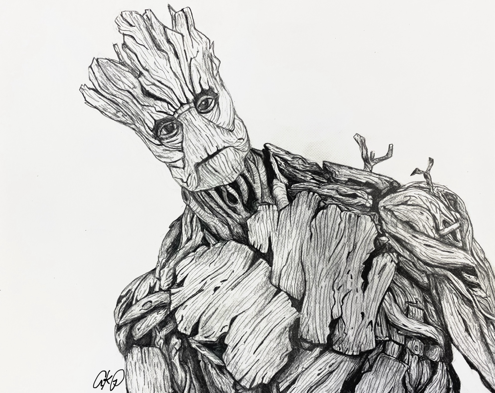
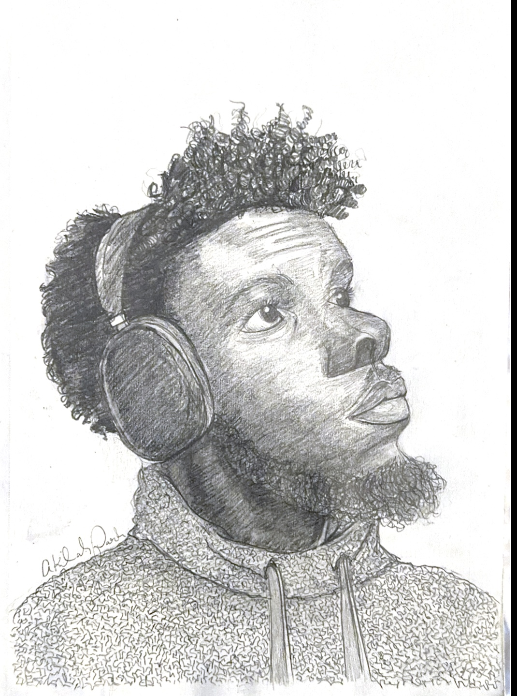
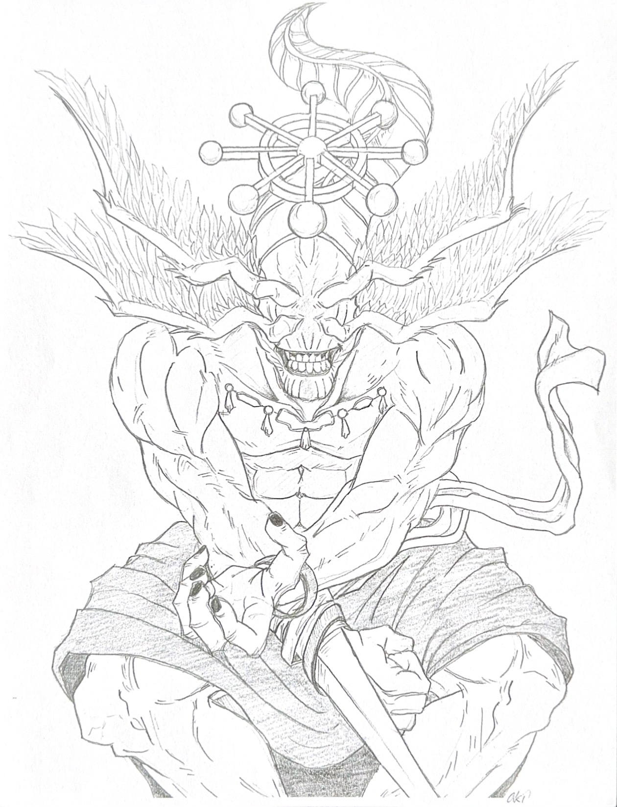
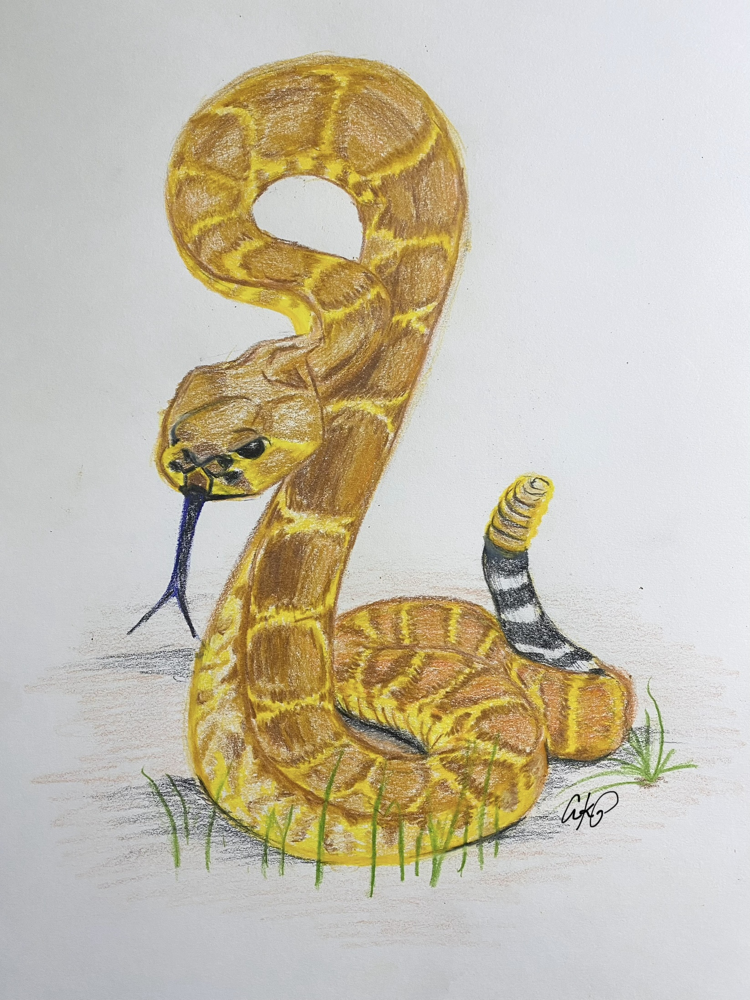
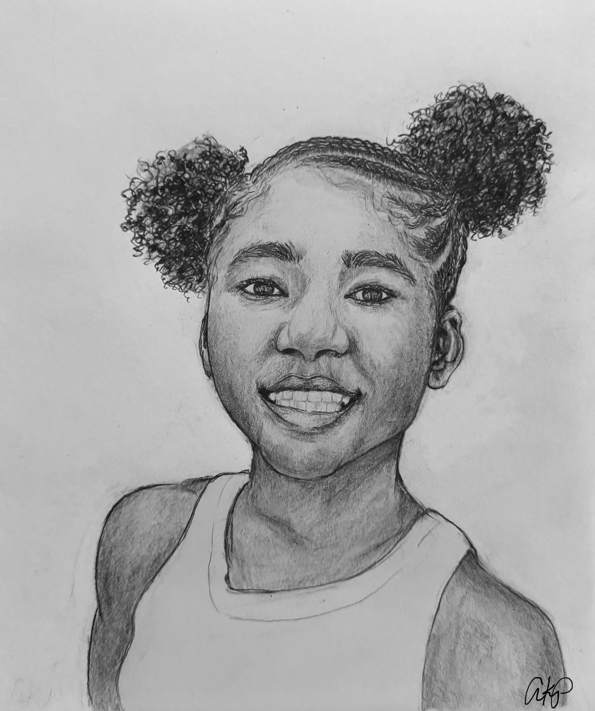

To view my technical projects:
To view my art portfolio:
I am an interdisciplinary creative, bringing diverse expertise to my work across tech, music, and the visual arts. As a recent college graduate from the University of Georgia, I hold a B.S. in Computer Science and a B.A. in Music with a Film Studies minor, and a Film and Media Scoring certificate. This unique combination of rigorous analytical training and deep artistic expression allows me to approach projects and tasks with structural clarity, musical creativity, and a technological edge. I aspire to work in the center of the intersection of art and technology. Thus, I'm striving to become a technical director in the visual effects industry, but continue to hone my skills in 2D and 3D art on the side.
| Languages | Python, C++, Java, C, SQL, HTML5, CSS3 |
|---|---|
| DevOps and Automation | Github Actions, CI/CD Pipelines, Linux, Git, Unix |
| Frameworks | Object-Oriented Programming (OOP) |
| Creative Tools | Maya Autodesk, Blender, Adobe Photoshop, Houdini Apprentice, Krita |
I'm currently seeking entry-level opprotunities in the VFX, animation, and vide game industries, targeting positions as an Assistant/Associate Technical Director, Pipeline Director, or Tools Programmer. I'm eager to start this journey and help production teams build creative workflows while solving technical problems.
[Add Resume and Link to Contact Page Here]
Video Window
Known as AkilahsArt on Instagram, I specialize in 2D realistic pencil drawings. As an artist, I also paint and crochet.
Please reference my gallery to see my work! :)
| Size | Base Price | Add Ons | |
|---|---|---|---|
| Pencil Portraits | 8 x 11 | [Price] | Extra for additional people |
| 11 x 14 | [Price] | ||
| Coloring Pages | 8 x 11 | [Price] | $ for every additional page |
| Logos | [size] | [Price] | Over 5 Symbols Charge |






If you would like to contact me further about job opportunies please refer to the following links:
Email: Email Akilah
LinkedIn: Akilah Parrish
GitHub: @akilahp
If you are looking to contact me about commission or potential artwork dm me on Instagram @akilahsart